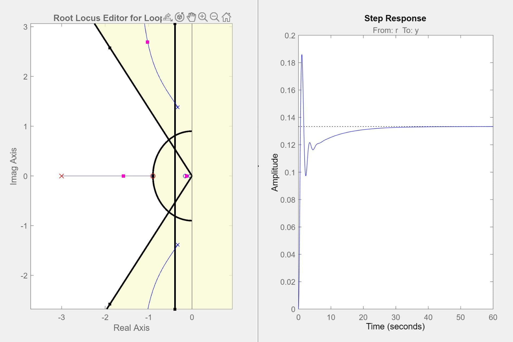
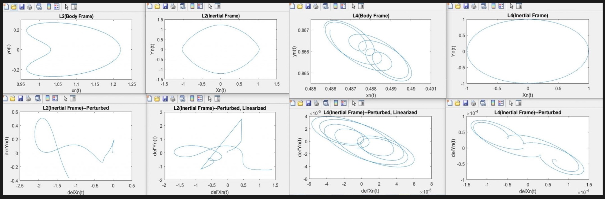

School Projects
Aerospace Engineering at Penn State
This page is a collection of some of my favorite projects in undergrad. I've included a description the project, the class it was for, and images/videos where appropriate for each.
AERSP 424, Advanced Computer Programming in C++
For our final project, my group and I created a gimbal-mounted “sentry tower” that would track a target based on color recognition. We got experience implementing our C++ code with third party software (namely OpenCV) and interfacing said software with custom hardware. Shown below is our gimbal mounted camera completing a full field of view sweep to initially detect the target.
AERSP 304, System Dynamics & Controls (Final Report)
Integrating the dynamics modelling skills we’d acquired in the first half of this course with the closed-loop control system design skills we’d acquired in the second (in this case the root locus method), this project asked us to simulate and ultimately improve the performance of a quadrotor drone attempting to follow a given trajectory. Shown below on the left is a root locus plot showing how the addition of a lag compensator affects the system by pole placement, and on the right is the corresponding step response.
AERSP 304, System Dynamics & Controls (Report 1)
This project tasked us with modelling the relative motion of celestial bodies, specifically the “circular restricted three body problem.” It heavily involved our knowledge of rotational body kinematics, orbital mechanics, and differential equation approximation techniques. Shown below are orbit trajectories of a satellite about the “Earth-Moon L2 & L4 Points.” These are two of the 5 points in space in which the gravitational forces of the Earth & Moon are equal, and thus a spacecraft will stay at rest (a.k.a Lagrange points). As shown below, orbits about L2 are unstable, meaning that they break down in the face of disturbances and produce unpredictable behavior. Orbits about L4 are semi-stable, meaning that while they do not return to the original orbit exactly they do produce more predictable post-disturbance behavior.
AERSP 313, Aerospace Analysis (Report 1)
This project tasked us with the approximation and modeling of quadrotor drone dynamics, both analytically and numerically. Being one of my first projects in aerospace, it was an awesome introduction to how the calculus and linear algebra skills we’d acquired in our freshman and sophomore years would be used going forward. The assigned analytical method was the Laplace transform, which although I didn’t know it yet would soon become essential to my favorite area of aerospace: control systems. The assigned numerical method was the Runge-Kutta method, which is an effective state-space representation based approximation technique for higher order differential equation systems. This method is used very commonly in industry, a well-known example being the ode45 function approximator in MATLAB.